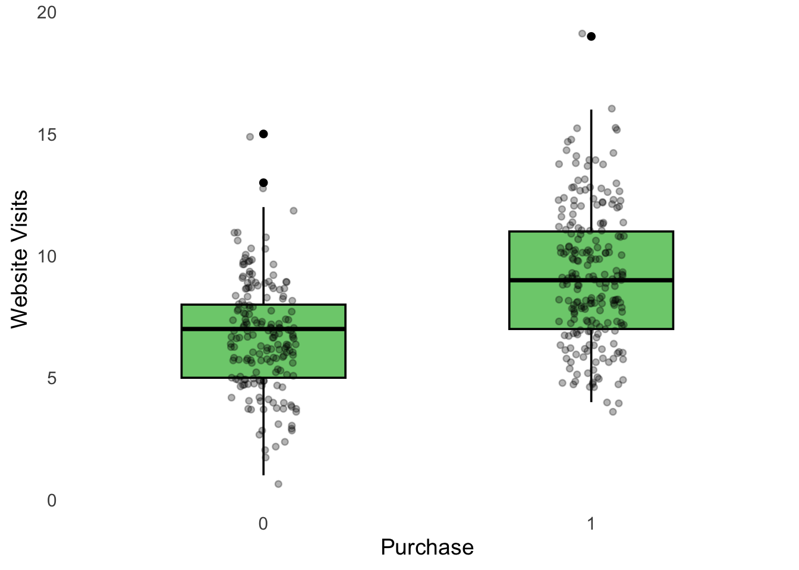

# Clear Environment
rm(list = ls())
# Load packages
library(tidyverse)
source("Functions/EDA_functions.R")
source("Functions/linear_regression_functions.R")13 Logistic Regression: Lab 1
Introduction to Logistic Regression and Classification
13.1 Introduction
In the previous labs, we used linear regression to predict a quantitative outcome such as sales. We now move to classification.
In classification problems, the outcome variable represents a category rather than a continuous numerical value. In this module, we focus on binary classification, where there are two possible outcomes. Examples include:
- customer buys / does not buy
- customer churns / does not churn
- loan defaults / does not default
- employee leaves / stays
- transaction is fraudulent / not fraudulent
We will work with logistic regression. The goal is not to focus on interpreting logistic regression coefficients. Instead, we will focus on how logistic regression can be used to generate probabilities and make classifications. The workflow will look something like this:
Predictors → Probability → Classification → Evaluation → Business decision
13.1.1 Learning objectives
After completing this lab, you should be able to:
- identify a binary outcome variable
- explain the difference between regression and classification
- fit a logistic regression model in R
- generate predicted probabilities
- convert probabilities into predicted classes using a threshold
- create and interpret a confusion matrix
- calculate accuracy, precision, recall, and specificity
- explain the different roles of training and test data
- examine how different classification thresholds affect predictions
- evaluate a fitted classification model using test data
13.1.2 Prepare the R Session
13.1.3 Import the Data
Imagine that a company wants to predict whether a customer will purchase a product. The outcome variable is purchase:
0= customer did not purchase;1= customer purchased.
df <- read.csv("Data/logistic_data1.csv")Inspect the data.
summary(df) website_visits purchase
Min. : 1.000 Min. :0.0000
1st Qu.: 6.000 1st Qu.:0.0000
Median : 8.000 Median :1.0000
Mean : 8.033 Mean :0.5425
3rd Qu.:10.000 3rd Qu.:1.0000
Max. :19.000 Max. :1.0000 Convert purchase to a factor.
# Mutate
df <- df |>
mutate(
purchase = factor(purchase, ordered = FALSE)
)13.1.3.1 Questions
- How many observations are in the dataset?
- Which variable is the outcome variable?
- What do the values 0 and 1 represent?
- Which variables could be useful predictors?
13.1.4 Classification vs. Regression
In linear regression, the outcome is quantitative. In classification, the outcome is a category. In this case we want to predict a purchase. Logistic regression first estimates a probability. For example:
Probability of purchase = 0.72
We then use a classification threshold to convert that probability into a predicted class. With a threshold of 0.50:
- probability \(\geq 0.50\) → predict
1; - probability \(< 0.50\) → predict
0.
13.1.4.1 Questions
- Why can we not treat this problem exactly like the sales prediction problem from linear regression?
- What does a predicted probability of 0.80 mean?
- If the threshold is 0.50, how would a probability of 0.80 be classified?
13.1.5 Explore the Outcome Variable
Count the observations in each class.
table(df$purchase)
0 1
183 217 Calculate proportions.
prop.table(
table(df$purchase)
)
0 1
0.4575 0.5425 13.1.5.1 Questions
- What percentage of customers purchased the product?
- Are the two classes approximately balanced?
- Why might class balance matter when evaluating a classification model?
13.1.6 Explore Predictors
Suppose the dataset contains predictors such as marketing, income, and website_visits. Compare website visits across the two outcome groups.
boxplot_grouped(
df$website_visits,
df$purchase,
xlab = "Purchase",
ylab = "Website Visits",
suffix = ""
)
13.2 Understanding Logistic Regression
13.2.1 Fit a Logistic Regression Model
We first fit the model using the full dataset so that we can understand how logistic regression works. Fit a logistic regression model using website_visits as the predictor.
model <- glm(
purchase ~ website_visits,
data = df,
family = binomial
)Inspect the model.
summary(model)
Call:
glm(formula = purchase ~ website_visits, family = binomial, data = df)
Coefficients:
Estimate Std. Error z value Pr(>|z|)
(Intercept) -2.9934 0.4075 -7.345 2.06e-13 ***
website_visits 0.4036 0.0512 7.883 3.19e-15 ***
---
Signif. codes: 0 '***' 0.001 '**' 0.01 '*' 0.05 '.' 0.1 ' ' 1
(Dispersion parameter for binomial family taken to be 1)
Null deviance: 551.62 on 399 degrees of freedom
Residual deviance: 465.92 on 398 degrees of freedom
AIC: 469.92
Number of Fisher Scoring iterations: 4
Focus of this lab
You do not need to interpret the logistic regression coefficients in detail. Our main interest is whether the model can produce useful probabilities and classifications.
13.2.2 Generate Predicted Probabilities
Use the model to calculate a predicted probability for every customer.
df$predicted_probability <- predict(
model,
type = "response"
)Inspect the results.
head(df) website_visits purchase predicted_probability
1 6 1 0.3607971
2 10 1 0.7393228
3 7 1 0.4580199
4 11 1 0.8093884
5 13 1 0.9049279
6 4 0 0.201156013.2.2.1 Questions
- What is the smallest predicted probability?
- What is the largest predicted probability?
- Are all predicted probabilities between 0 and 1?
- Why is this useful for classification?
13.2.3 Convert Probabilities into Classes
Use a threshold of 0.50. You don’t need to know the function ifelse. We will only use it in this context. Just copy-paste that part of the code.
df <- df |>
mutate(
predicted_class = ifelse(
predicted_probability >= 0.50,
1,
0
)
)Inspect the results.
head(df) website_visits purchase predicted_probability predicted_class
1 6 1 0.3607971 0
2 10 1 0.7393228 1
3 7 1 0.4580199 0
4 11 1 0.8093884 1
5 13 1 0.9049279 1
6 4 0 0.2011560 013.2.3.1 Questions
- How is a predicted probability converted into a predicted class?
- What class would be predicted for a probability of 0.49?
- What class would be predicted for a probability of 0.51?
13.2.4 Confusion Matrix
Compare observed and predicted classes.
confusion <- table(
Actual = df$purchase,
Predicted = df$predicted_class
)
confusion Predicted
Actual 0 1
0 124 59
1 65 152A confusion matrix contains four types of predictions:
- True Positive (TP) — predicted 1 and actual outcome is 1;
- True Negative (TN) — predicted 0 and actual outcome is 0;
- False Positive (FP) — predicted 1 but actual outcome is 0;
- False Negative (FN) — predicted 0 but actual outcome is 1.
13.2.4.1 Questions
- How many true positives are there?
- How many true negatives are there?
- How many false positives are there?
- How many false negatives are there?
13.2.5 Accuracy
Accuracy is the proportion of all predictions that are correct.
accuracy <- mean(
df$purchase == df$predicted_class
)
accuracy[1] 0.6913.2.5.1 Questions
- What is the model accuracy?
- What percentage of observations were classified correctly?
13.2.6 Precision, Recall, and Specificity
We can also use other measures directly linked to the matrix.
Precision is the proportion of predicted positive cases that are actually positive. In this lab: Of all customers predicted to purchase, how many actually purchased?
Recall is the proportion of actual positive cases that the model correctly identifies. In this lab: Of all customers who actually purchased, how many did the model correctly identify?
Specificity is the proportion of actual negative cases that the model correctly identifies. In this lab: Of all customers who did not purchase, how many did the model correctly identify?
We start by extracting some values from the confusion matrix. You dont need to understand this.
TN <- confusion[1, 1]
FP <- confusion[1, 2]
FN <- confusion[2, 1]
TP <- confusion[2, 2]Calculate precision.
precision <- TP / (TP + FP)
precision[1] 0.7203791Calculate recall.
recall <- TP / (TP + FN)
recall[1] 0.7004608Calculate specificity.
specificity <- TN / (TN + FP)
specificity[1] 0.6775956Another way of thinking about these measues is:
- Precision: When the model predicts purchase, how often is it correct?
- Recall: Of all customers who actually purchased, how many did the model identify?
- Specificity: Of all customers who did not purchase, how many did the model correctly identify?
13.2.6.1 Questions
- Which metric would be especially important if missing a potential buyer were costly?
13.2.7 Change the Classification Threshold
The threshold does not have to be 0.50. For now, we use the full dataset only to understand what happens when the threshold changes. Try a threshold of 0.30.
df <- df |>
mutate(
predicted_class_030 = ifelse(
predicted_probability >= 0.30,
1,
0
)
)Create a new confusion matrix.
table(
Actual = df$purchase,
Predicted = df$predicted_class_030
) Predicted
Actual 0 1
0 52 131
1 18 199Now try a threshold of 0.70.
df <- df |>
mutate(
predicted_class_070 = ifelse(
predicted_probability >= 0.70,
1,
0
)
)table(
Actual = df$purchase,
Predicted = df$predicted_class_070
) Predicted
Actual 0 1
0 165 18
1 126 9113.2.7.1 Questions
- What happens to the number of positive predictions when the threshold decreases?
- What happens when the threshold increases?
- How does changing the threshold affect false positives and false negatives?
- Why might a company deliberately choose a threshold other than 0.50?
13.3 Training and Test Data
So far, we have fitted and evaluated the model using the same data. This is useful for understanding how logistic regression works, but it does not tell us how well the model will classify new observations. As in the previous lab, we divide the data into two parts:
- training data — used to fit and develop the model;
- test data — used to evaluate how well the fitted model classifies new observations.
In this lab, we use: - 70% training data; - 30% test data.
Why do we need test data?
The model is fitted using the training observations. Its performance on those observations can therefore give us an overly optimistic impression of how well it will work on new data.
The test data contain observations that were not used to fit the model. They allow us to evaluate how well the model generalizes to new observations.
13.3.1 Split the Data
data_split <- split_data(
df,
train_prop = 0.70,
test_prop = 0.30
)Extract the two datasets.
train_data <- data_split$train_data
test_data <- data_split$test_dataCheck the sizes.
nrow(train_data)[1] 280nrow(test_data)[1] 12013.3.1.1 Questions
- How many observations are in the training data?
- How many observations are in the test data?
- What is the purpose of the training data?
- What is the purpose of the test data?
- Why should we evaluate the model using observations that were not used to fit it?
13.3.2 Fit the Model Using Training Data
We now fit the logistic regression model using only the training data.
model_train <- glm(
purchase ~ website_visits,
data = train_data,
family = binomial
)Inspect the model.
summary(model_train)
Call:
glm(formula = purchase ~ website_visits, family = binomial, data = train_data)
Coefficients:
Estimate Std. Error z value Pr(>|z|)
(Intercept) -3.08168 0.49508 -6.225 4.83e-10 ***
website_visits 0.42139 0.06281 6.709 1.96e-11 ***
---
Signif. codes: 0 '***' 0.001 '**' 0.01 '*' 0.05 '.' 0.1 ' ' 1
(Dispersion parameter for binomial family taken to be 1)
Null deviance: 385.74 on 279 degrees of freedom
Residual deviance: 322.60 on 278 degrees of freedom
AIC: 326.6
Number of Fisher Scoring iterations: 413.4 Evaluate the Model on the Training Data
13.4.1 Generate Training Probabilities
Use the fitted model to calculate predicted probabilities for the training observations.
train_data$predicted_probability <- predict(
model_train,
newdata = train_data,
type = "response"
)Convert the probabilities into predicted classes using a threshold of 0.50.
train_data <- train_data |>
mutate(
predicted_class = ifelse(
predicted_probability >= 0.50,
1,
0
)
)13.4.2 Create the Training Confusion Matrix
train_confusion <- table(
Actual = train_data$purchase,
Predicted = train_data$predicted_class
)
train_confusion Predicted
Actual 0 1
0 88 39
1 43 11013.4.3 Calculate Training Accuracy
train_accuracy <- mean(
train_data$purchase ==
train_data$predicted_class
)
train_accuracy[1] 0.7071429Extract the four parts of the confusion matrix.
TN <- train_confusion[1, 1]
FP <- train_confusion[1, 2]
FN <- train_confusion[2, 1]
TP <- train_confusion[2, 2]Calculate the remaining metrics.
train_precision <- TP / (TP + FP)
train_recall <- TP / (TP + FN)
train_specificity <- TN / (TN + FP)Inspect the results.
train_accuracy[1] 0.7071429train_precision[1] 0.738255train_recall[1] 0.7189542train_specificity[1] 0.692913413.4.3.1 Questions
- What is the training accuracy?
- What is the training precision?
- What is the training recall?
- What is the training specificity?
- What does training performance tell us about the model?
13.5 Classification Threshold
13.5.1 Compare Thresholds Using the Training Data
The classification threshold is an important modeling choice. We can examine how different thresholds change the classifications using the training data.
Try a threshold of 0.30.
train_data <- train_data |>
mutate(
predicted_class_030 = ifelse(
predicted_probability >= 0.30,
1,
0
)
)Create the confusion matrix.
train_confusion_030 <- table(
Actual = train_data$purchase,
Predicted = train_data$predicted_class_030
)
train_confusion_030 Predicted
Actual 0 1
0 37 90
1 16 137Now try a threshold of 0.70.
train_data <- train_data |>
mutate(
predicted_class_070 = ifelse(
predicted_probability >= 0.70,
1,
0
)
)Create the confusion matrix.
train_confusion_070 <- table(
Actual = train_data$purchase,
Predicted = train_data$predicted_class_070
)
train_confusion_070 Predicted
Actual 0 1
0 118 9
1 92 6113.5.1.1 Questions
- What happens to the number of positive predictions when the threshold decreases?
- What happens when the threshold increases?
- How does the threshold affect false positives and false negatives?
- Which threshold would you choose?
- Why might the appropriate threshold depend on the business problem?
Threshold selection
A lower threshold generally produces more positive predictions. This can increase recall, but it can also increase the number of false positives.
A higher threshold generally produces fewer positive predictions. This can reduce false positives, but it can also increase the number of false negatives.
There is therefore no threshold that is automatically best in every business problem. The appropriate threshold depends partly on the consequences of different types of classification errors.
13.5.2 Select a Classification Threshold
Choose the threshold you want to use.
For example:
selected_threshold <- 0.50Change this value if you decide that another threshold is more appropriate.
13.6 Evaluate the Model Using Test Data
We now use the fitted model to classify observations that were not used to fit the model.
13.6.1 Predict the Test Data
Calculate predicted probabilities.
test_data$predicted_probability <- predict(
model_train,
newdata = test_data,
type = "response"
)Convert probabilities into predicted classes using the selected threshold.
test_data <- test_data |>
mutate(
predicted_class = ifelse(
predicted_probability >= selected_threshold,
1,
0
)
)13.6.2 Evaluate Test Classification
Create the test confusion matrix.
test_confusion <- table(
Actual = test_data$purchase,
Predicted = test_data$predicted_class
)
test_confusion Predicted
Actual 0 1
0 36 20
1 22 42Calculate test accuracy.
test_accuracy <- mean(
test_data$purchase ==
test_data$predicted_class
)
test_accuracy[1] 0.65Extract the values.
TN <- test_confusion[1, 1]
FP <- test_confusion[1, 2]
FN <- test_confusion[2, 1]
TP <- test_confusion[2, 2]Calculate the remaining metrics.
test_precision <- TP / (TP + FP)
test_recall <- TP / (TP + FN)
test_specificity <- TN / (TN + FP)Inspect the results.
test_accuracy[1] 0.65test_precision[1] 0.6774194test_recall[1] 0.65625test_specificity[1] 0.642857113.6.2.1 Questions
- What is the test accuracy?
- What is the test precision?
- What is the test recall?
- What is the test specificity?
- Does the model appear to classify new observations reasonably well?
13.6.3 Compare Training and Test Performance
It is useful to compare the model’s performance on the training and test data.
performance <- data.frame(
Dataset = c(
"Training",
"Test"
),
Accuracy = c(
train_accuracy,
test_accuracy
),
Precision = c(
train_precision,
test_precision
),
Recall = c(
train_recall,
test_recall
),
Specificity = c(
train_specificity,
test_specificity
)
)
performance Dataset Accuracy Precision Recall Specificity
1 Training 0.7071429 0.7382550 0.7189542 0.6929134
2 Test 0.6500000 0.6774194 0.6562500 0.6428571The training results tell us how well the model classifies observations that were used to estimate the model.
The test results tell us how well the same fitted model classifies observations it has not seen before.
If performance is substantially better on the training data than on the test data, this may indicate that the model does not generalize well to new observations.
13.6.3.1 Questions
- How similar are the training and test results?
- Is test accuracy higher or lower than training accuracy?
- Does the model appear to generalize reasonably well to new observations?
- Which dataset gives us the best indication of how the model will perform on new customers?
13.7 Final Exercise
Imagine that the company wants to use the model to identify customers who are likely to purchase.
Answer the following questions.
- What is the outcome variable?
- What does a predicted probability represent?
- Which classification threshold did you select?
- Why did you select this threshold?
- What was the training accuracy?
- What was the test accuracy?
- What was the test precision?
- What was the test recall?
- How does the model’s test performance compare with its training performance?
- What types of classification errors does the model make?
- Would this model be useful for targeting customers? Explain briefly.